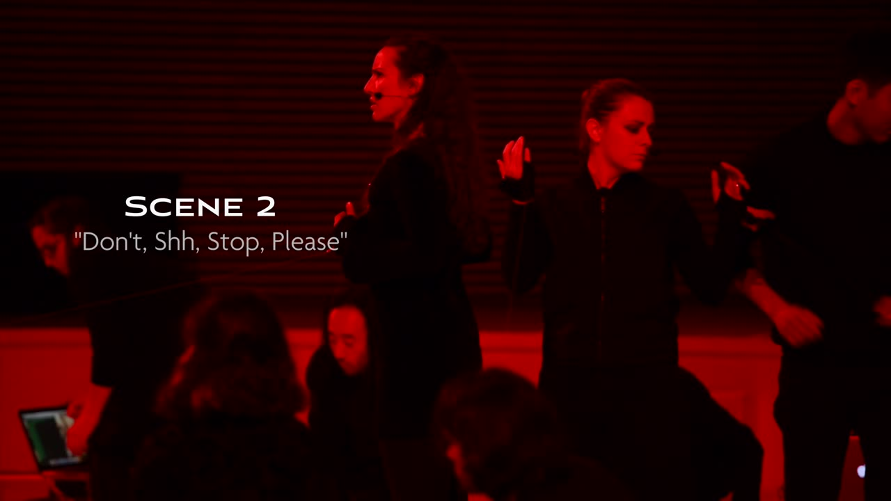
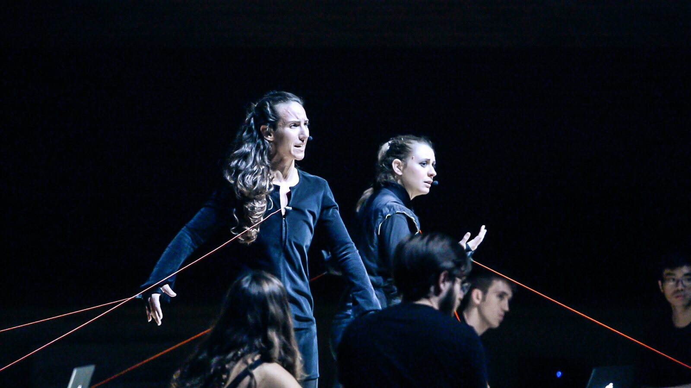
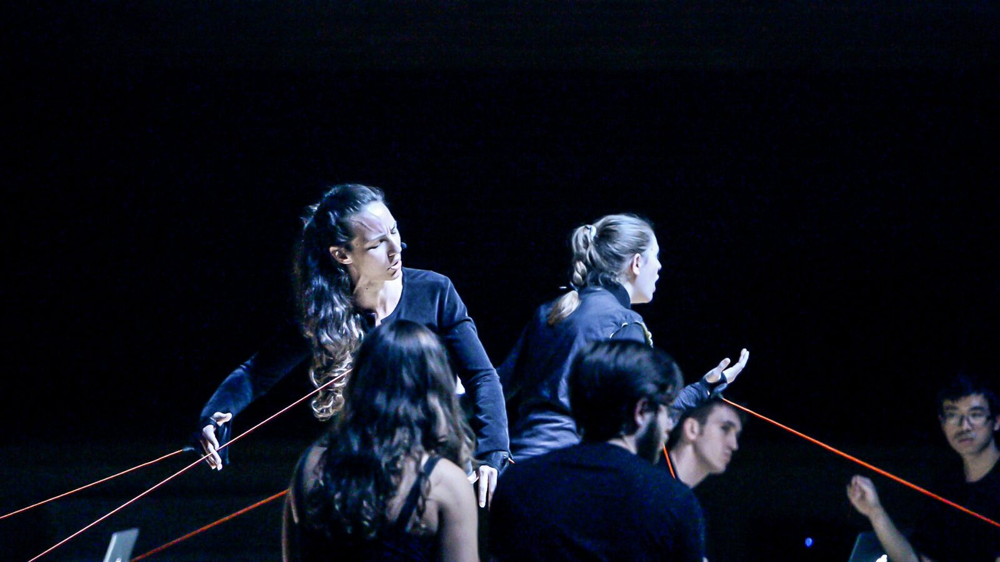

The Furies: A Laptopera - "Don't Sh Stop Please"
Project Description
“Don’t Sh Stop Please” is an excerpt of The Furies: A Laptopera, an adaptation of the Electra story. In this scene, the Furies, gods of vengeance, attach tether lines to Orestia and Electra's wrists and chest, a manifestation of the Furies’ hold on them through the guilt that they feel as punishment for their crime, matricide. Here, the tethers play a sonic, visual, and dramatic role. The instrument is designed to create a dramatic task for the Furies chorus. They must pull their tethers, on cue, to change the pitch of their station and thus create the musical texture that supports the vocal line. Simultaneously, they physically pull Electra and Orestia closer and closer to the ground, ready to devour them.
Each laptop station independently controls one note of a six-note chord. The instrument is designed so that the right tether determines pitch. The pitch changes are pre-programmed so that a change in velocity triggered by a strong tug on the tether cues the next pitch. The left tether controls volume (z axis) and vibrato (x axis). The tones are kept simple, plain sine tones with reverb. Vibrato creates a warm and living sound, while volume emphasizes pitch change. Specifically, the players were instructed to place an accent at the moment of pitch change. Pitch changes are rhythmic and intended to happen on the downbeat.
In support of the embodied metaphor of guilt as weight, both the vocal lines and the tether pitches descend over the course of the duet, collapsing at the end into a low cluster chord. Electra and Orestia physically reinforce this descent with the descent of their bodies, dictated by the pull of each tether. In this way, the instrument design unifies sonic, visual, character, and choreographic elements to support the underlying themes of the narrative.
Type of submission
This work lies between option 1 and option 2. If we imagine the NIME as the “laptopera,” opera created for laptop orchestra prioritizing instrument design in support of character development and narrative, it is a “NIME with a Story” because we presented the excerpt “Glorious Guilt” from The Furies: A Laptopera at NIME 2021 as a music selection. If we are considering the specific instrumentation of the excerpt, the instruments utilized in that excerpt were completely distinct from the tether instrument in “Don’t Sh Stop Please.” Although still using the GameTrak tether hardware, the interface and human interaction are unique from our previous submission. For these reasons, it could also be considered a “New NIME.”
PROGRAM NOTES
Originally premiered by the Stanford Laptop Orchestra, “Don’t Sh Stop Please” is an excerpt of The Furies: A Laptopera, an opera for laptop orchestra and live vocalists. This opera is a retelling of the Greek tragedy Electra and explores central questions regarding cycles of violence and the meaning of justice and redemption. In this moment, the Furies, given the task of enforcing moral law, surround Electra and Orestia as they grapple with the violence they have perpetrated in killing their mother and simultaneously avenging their father. Electra and Orestia sing a duet exposing their inability to understand each other as they attempt to withstand the pressure of guilt from the Furies surrounding them. Using the laptop orchestra as the medium for this artistic creation, guilt is made manifest through GameTrak tether lines attached to each sister. The vocal lines and the tether pitches descend over the course of the duet, collapsing at the end into a low cluster chord. Electra and Orestia physically reinforce this descent with the descent of their bodies, dictated by the pull of each tether. In this way, the instrument design unifies sonic, visual, character, and choreographic elements to support the underlying themes of the narrative.
Media
“Don’t Sh Stop Please” from The Furies: A Laptopera (Act III, 2019)
Performed by Stanford Laptop Orchestra
Bing Concert Hall @ Stanford University, June 2019
Music & Libretto: Anne Hege
Instrument Design: Anne Hege, Camille Noufi, Elena Georgieva;
Soloists - Electra: Shauna Fallihee; Orestia: Alice Del Simone;
Stanford Laptop Orchestra directed by Ge Wang
Conductor: Anne Hege
Produced by: Anne Hege and Ge Wang

▶Act III, Scene 2 of The Furies: A Laptopera: “Don’t Sh Stop Please”


“Don’t Sh Stop Please” from The Furies: A Laptopera. Beginning of the duet, Electra and Orestia are still upright.


“Don’t Sh Stop Please” from The Furies: A Laptopera. In the middle of the duet, Electra and Orestia are being pulled to the ground by the Furies, gods of vengeance.
Ethics Statement
"Don't Sh Stop Please" was composed in Kensington, CA on the unceded territory of the Huchiun band of the Ohlone indigenous people and Shuumi has been paid annually as an acknowledgment of being a guest on this property. The piece was rehearsed and performed on the ancestral land of the Muwekma Ohlone Tribe. This piece has received Institutional funding from Stanford University, along with a New Music USA Project Grant (2019) for the premiere of Act III. The authors do not believe that there are any potential conflicts of interest financial or non-financial. All research participants gave full consent to participate. No animals were involved in this research. The composer and collaborators have discussed issues of accessibility in terms of access to live performance and the belief in the importance of balancing the true value of sharing physical space together through live performance and creating accessibility to the work through online documentation. The original performance was free of charge. The electronic sounds are created using the ChucK sound synthesis program, an open-source software. The tether instrument was redesigned to trigger changes based on velocity, allowing for physical differences within the soloist's bodies rather than using the length of the tether. Discussions of sustainability regarding technology, energy use, amplification, rehearsal practices, and commuting demands have been discussed with some use of online rehearsal practices to minimize travel. Finally, the work is a retelling of the Electra story and a deep investigation into questions of justice and cycles of violence while redefining some of the elemental gender roles present in the original myth. Our hope is to present a work that allows for a moment to deeply explore how violence lives with all of us and how that impacts our lives and communities.
Acknowledgments
Our thanks to all performers of The Furies: A Laptopera including SLOrk 2019 (Munira Alimire, Hassan Estakhrian, Ben Gaiarin, Hillary Hermawan, Kunwoo Kim, Mark Sabini, Ryan Smith, Cara Turnbull, Jack Atherton, Trijeet Mukhopadhyay), SideLObe 2019 (Raul Altosaar, Andrea Baldioceda, Madeline Huberth, Mike Mulshine), Sidney Chen, Shauna Fallihee, Alice Del Simone, Catie Cuan, Amy Foote, Monica Covitt, Matt Wright, Curtis Ullerich, Nette Worthy, Brendan Larkin, Constantine Basica, David Kerr, and the CCRMA community.